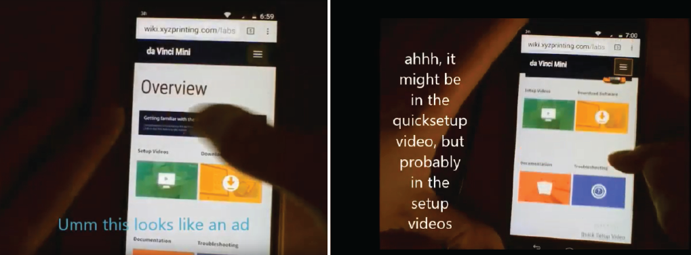

Mobile-first online product documentation
Helping users find relevant product information seamlessly

Background
XYZprinting, a world-leading 3D printing company, was releasing an entry-level 3D printer designed for families and home hobbyists, the da Vinci Mini. The only online documentation available was a PDF version of the manual, a difficult format to read on mobile devices and slow for information searching.
The Brief
Create an online documentation website to improve the product setup user experience:
- Streamline the product onboarding process
- Allow quick access to video content, software downloads and customer support
- Release minimum viable product(MVP) to get buy-in from upper management
The Result
After 3 years of use the MVP is being rolled out across all products and incorporated into XYZprinting’s new website:
- Mobile usage has grown to 23% of all site hits
- Average new monthly users regularly double the product monthly product sales count
The Approach
User Walkthrough
I documented users in their home environment to clearly see gaps in the user experience and provide supporting evidence for a user journey.
User Journey
Applying research from previous user interviews by other team members and my findings, I then created a chart mapping the user journey.
Top Tasks
I broke the setup phase of the journey down into three common setup tasks to see where improvements could be made using an online documentation website. These tasks were:
- Download the printing software
- Reading an FAQ
- Watching an install video
Visualization
Keeping in mind the main tasks I then did a series of quick sketches visualizing the mobile and desktop views. These then slowly evolved into working paper prototypes that I tested on colleagues.

Wireframes
To clearly communicate with developers, the marketing team and make a working prototype I created wireframes in Figma and exported it to Invision.

Prototyping and testing
To test this new design, we asked four first time users to unbox the da Vinci Mini and print something. Two users were given the existing design and two given the proposed design. Findings:
- Users Google searched for setup information
- Noone used the link in the quick guide because of information overload
- 38.9% of issues were related to help and documentation
Redesign
Using what we observed during testing, we shortened the quick guide to just one link. This would be the first thing users saw when opening the product. The manual would also be included to give users the option of using both digital and physical documentation.

Website testing
To verify that the users could locate the top tasks and for future benchmarking, we conducted usertesting online with our target audience in American. All users were able to download the printing software, find the FAQ and install video in under 2 minutes.
Things I Learnt
- When designing new systems that need content from different teams it is important to consult them early on in the process and consider them as a user too
- It is better to ship a simplified version of your design than delay release
My Role
UX Designer
Tools: Axure, Figma, pen and paper
Date: October 2018 - March 2019 (6 months)
Team: Totoro, Sam Ho, Jessica Peng
Deliverables: Axure design specification document, Axure interactive prototype, Figma, Invision, research findings presentation, Wordpress CMS.